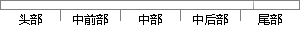

3中的分析，我们知道可以通过增加自变量的数量来改善我们的模型。
片段位置图

相似结果|
1
原句片段：3中的分析，我们知道可以通过增加自变量的数量来改善我们的模型。
相似片段 1：应该知道的7种回归模型 阅读量:28607 java buffered...那么使用回归分析,我们就可以根据当前和过去的信息来...在这种技术中,因变量是连续的,自变量可以是连续的也...
|
※ 片段修改建议 ※
近似词参考：- 分析：阐发 阐明 剖析
- 我们：咱们
- 知道：晓得
- 通过：经由过程
- 增加：增添 增长
- 数量：数目
- 改善：改良 改进
- 我们：咱们
- 模型：模子
系统自动生成语句：3中的阐发，咱们晓得可以经由过程增添自变量的数目来改良咱们的模子。
注：本片段修改建议为系统自动生成，仅供参考。